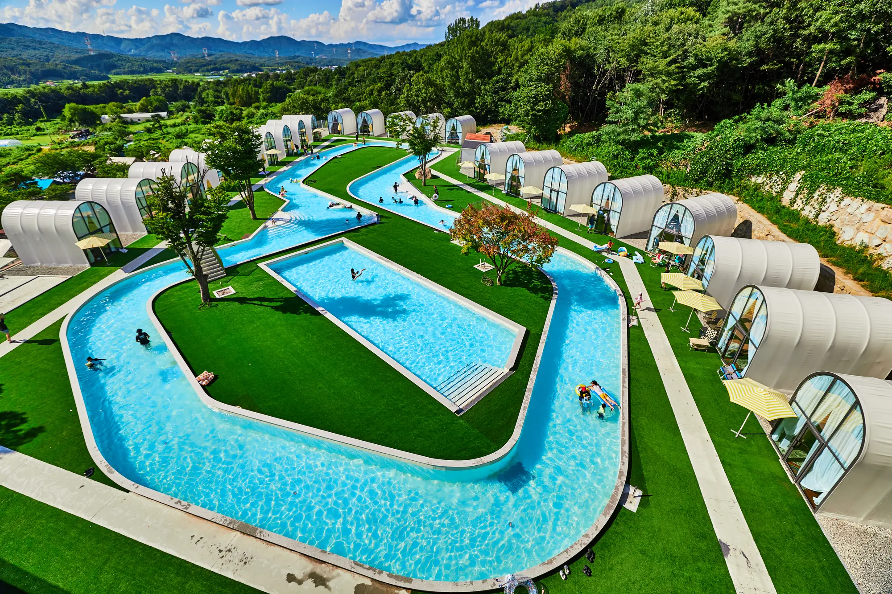
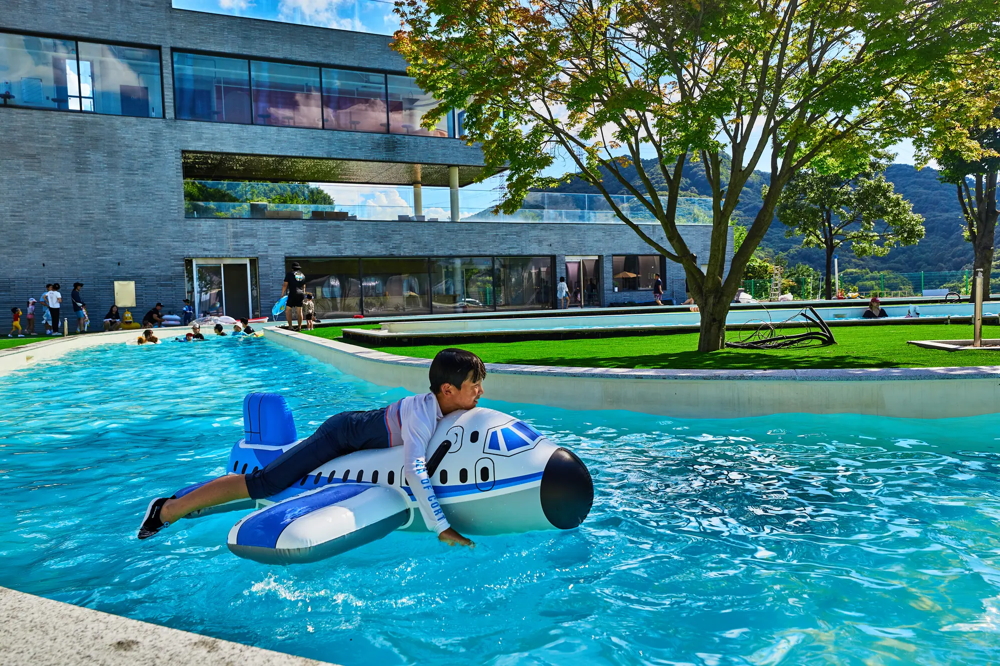
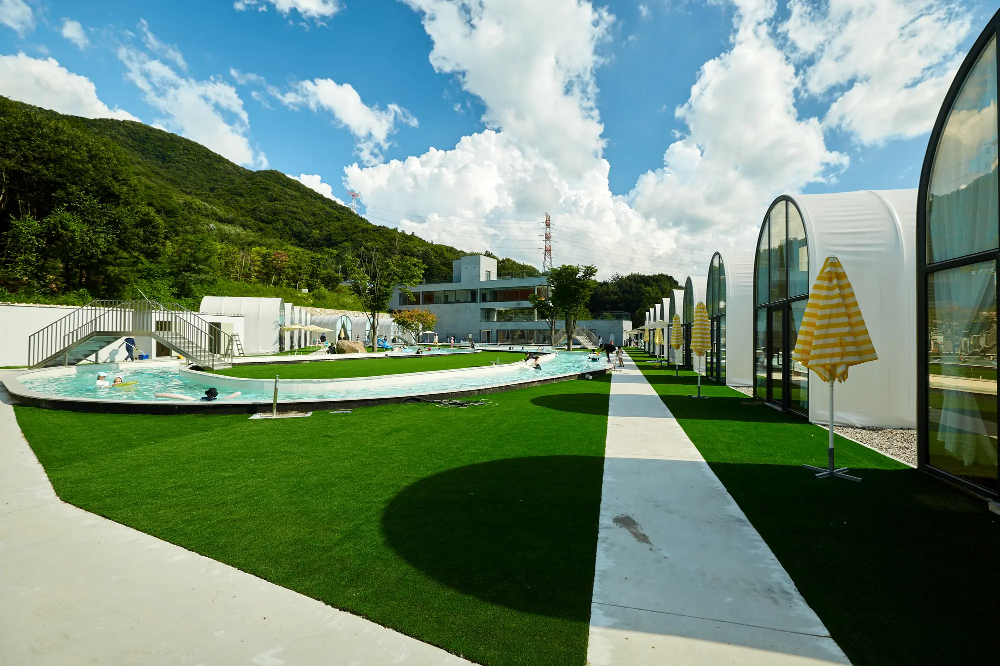
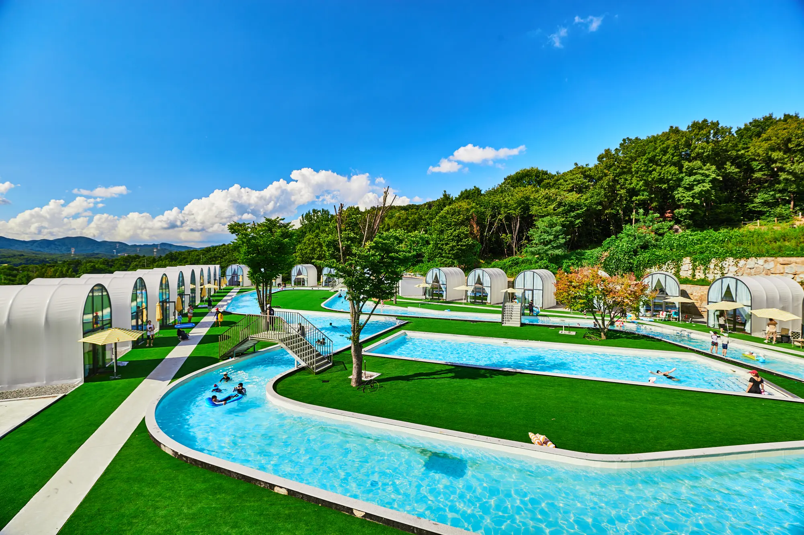

Nature
자연을 단순한 배경이 아닌 머무는 시간과 경험의 일부로 생각합니다. 계절과 날씨에 따라 달라지는 풍경까지 공간의 한 장면으로 담아냅니다.
About RE:LIM
나인힐스와 레이지캠프에서 이어온 경험을 바탕으로,
리림은 숲과 물, 쉼과 식사가 함께하는 하루를 만듭니다.

Our Journey
나인힐스에서 시작된 자연 속 경험은 레이지캠프를 거치며 쉼과 식사가 함께하는 시간으로 확장되었습니다. 오랜 시간 자연 가까이에서 공간을 운영하며 사람들이 머물고, 먹고, 쉬는 방식을 세심하게 살펴왔습니다. 그렇게 쌓인 경험을 바탕으로 숲과 물, 식사와 휴식이 하나의 흐름으로 이어지는 리림이 탄생했습니다.
나인힐스는 일상에서 잠시 벗어나 자연 가까이 머무는 시간을 제안하며 시작되었습니다. 계절과 풍경을 온전히 느낄 수 있는 환경을 만들고 운영하면서, 좋은 공간은 시설보다 그 안에서 보내는 시간으로 기억된다는 것을 배웠습니다.
레이지캠프에서는 머무는 경험에 함께 먹고 이야기하는 즐거움을 더했습니다. 자연 속에서 보내는 평범한 식사와 대화도 특별한 기억이 될 수 있도록, 캠핑의 시간을 한층 편안하고 일상적인 방식으로 확장했습니다.
리림은 두 공간에서 축적한 경험을 바탕으로 물놀이와 휴식, 바비큐와 대화가 자연스럽게 이어지는 하루를 제안합니다. 개별 쉘터의 편안함과 물·숲의 풍경을 한 공간에 담아 가족과 친구가 각자의 속도로 즐길 수 있도록 완성했습니다.
One Philosophy
나인힐스에서 리림까지 이어진 공간들은 서로 다른 모습과 방식으로 사람을 맞이해왔지만, 자연 속에서 함께 보내는 시간의 가치를 가장 먼저 생각한다는 마음은 같습니다.
자연을 단순한 배경이 아닌 머무는 시간과 경험의 일부로 생각합니다. 계절과 날씨에 따라 달라지는 풍경까지 공간의 한 장면으로 담아냅니다.
함께 먹고 쉬고 이야기하는 평범한 시간을 더 특별하게 만듭니다. 가족과 친구가 편안하게 마주 앉아 오래 기억할 하루를 나눌 수 있도록 합니다.
공간과 사람, 빛과 계절의 흐름이 자연스럽게 이어지도록 합니다. 정해진 방식보다 각자의 속도로 머물며 하루를 완성할 수 있는 여백을 남깁니다.
About the Name
‘다시’를 의미하는 RE와 숲을 뜻하는 한자 林이 만나 리림이라는 이름이 되었습니다.
빠르게 흐르는 일상에서 잠시 벗어나 물과 나무, 바람과 빛을 가까이 느끼며 본래의 여유를 다시 발견하는 시간을 의미합니다.
리림은 멀리 떠나지 않아도 자연 안에서 충분히 쉬고, 즐기고, 서로에게 집중할 수 있는 하루를 만들고자 합니다.

The RE:LIM Experience
물놀이와 식사, 쉼이 분리되지 않고
하나의 자연스러운 경험으로 이어집니다.

01 · SWIM수영장과 유수풀을 따라 아이와 어른 모두 자유롭게 물놀이를 즐깁니다. 숲 사이로 이어지는 물길에서 계절의 온도와 햇빛을 가까이 느낄 수 있습니다.

02 · DINE각 팀을 위한 개별 쉘터에서 바비큐와 함께 여유로운 식사를 나눕니다. 독립된 공간의 편안함은 지키면서도 자연의 풍경은 함께 누릴 수 있습니다.

03 · REST낮의 풍경부터 저녁의 물빛까지 시간에 따라 달라지는 분위기를 경험합니다. 바쁘게 채우기보다 잠시 멈추고 각자의 속도로 쉬어가는 시간입니다.